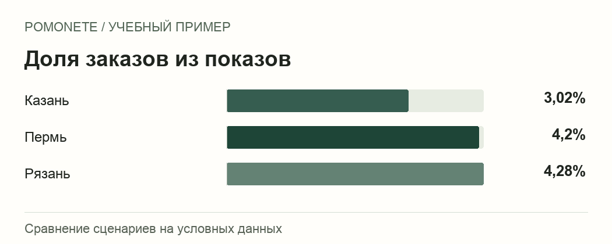

География заказов Яндекс Маркета и доля региона в показах
Как сравнить регионы до расширения ассортимента, учитывая разный объём внимания.
У продавца водоотводных ковриков три города и один план закупки. Из Казани оформляют больше единиц, но в Перми и Рязани оформивших больше на одинаковый объём показов. Чтобы пересмотреть направление отгрузки, селлер Яндекс Маркета сопоставляет обе части воронки и проверяет, какую доставку увидели покупатели.
Как собрать региональные срезы
Отберите одинаковые товарные семейства и выделите тот тип работ, который реально может масштабироваться на новый регион. Нормируйте на показы предложения для каждого города. Если в городе преобладает один типоразмер, соберите маленькую таблицу по нему во всех трёх строках, чтобы оценить эффект состава.
Чтобы пересобрать расчёт «Доля заказов из показов» для своего магазина, перенесите в него исходные числа. В формуле A обозначает «заказанные товары», B обозначает «показы предложения». Деление отвечает за долю, умножение на 100 переводит её в проценты. При нулевом знаменателе долю оставляют пустой. Запишите рядом период и охват каждого среза. Для оценочных строк оставьте пояснения рядом с исходными значениями. При чтении сводки будет видно, какие из них пока подтверждены.
Доля заказов из показов = A ÷ B × 100
| Условие | Заказанные товары | Показы предложения | Доля заказов из показов |
|---|---|---|---|
| Казань | 178 | 5 890 | 3,02% |
| Пермь | 121 | 2 880 | 4,2% |
| Рязань | 82 | 1 915 | 4,28% |

В сценарии «Казань» в формулу подставляем заказанные товары = 178, показы предложения = 5 890. Получается 3,02%. В крупном городе магазин держит короткое обещание по популярному типоразмеру.
В сценарии «Пермь» в формулу подставляем заказанные товары = 121, показы предложения = 2 880. Получается 4,2%. Показов заметно меньше, и в выборке преобладают несколько моделей одного размера.
В сценарии «Рязань» в формулу подставляем заказанные товары = 82, показы предложения = 1 915. Получается 4,28%. Регион собран из наличия разных размеров. Цены и рекламные режимы записаны отдельно.
Если «Казань» взять за исходную точку, «Пермь» меняет показатель «доля заказов из показов» на 1,18 п. п., а «Рязань» на 1,26 п. п.. Между двумя последними строками разница составляет 0,08 п. п. при вычитании второй из третьей. Смотрите, какой именно вход изменился между строками. Если менялись объём и условия одновременно, итог сравнения относится ко всему сочетанию.
Запишите отдельно результат по обычным условиям «Казань» (3,02%) и результат по уточнённым условиям «Рязань» (4,28%). Если обе оценки получились по одному правилу, следующий вопрос касается исходных данных. Проверьте, сохраняется ли направление сравнения, если вернуть одно нестабильное условие к исходному. Сценарии полезно привязывать к операционному событию, по которому можно проверить, что новый режим действительно произошёл.
Где путают привлекательность и охват
Небольшой регион способен обогнать крупный по конверсии на тонком слое пользователей, которые уже знают товар. Дополнительный охват может быть шире. Такой расчёт говорит об исходной группе, на которую пришлось наблюдение. Для прогноза роста потребуется отдельная гипотеза о том, кто увидит расширенную выкладку.
Проверьте переход от первичной записи до показателя «доля заказов из показов». Колонки «заказанные товары, показы предложения» могут поступить разными путями. Пройдите пример, где дата и сумма видны в исходнике, до последней строки. Для этого подойдут отчёт аналитики и история доступности предложения. Затем возьмите один случай с исключением и убедитесь, что результат можно восстановить по сохранённому правилу.
Рядом с таблицей показов положите календарь доступности, позиций и цен. Выгрузка агрегатов удобна для первого сигнала, но день с выключенным предложением ломает сравнение. Для каждой крупной группы полезно иметь отдельные суммы числителя и знаменателя. Если у дорогой категории мало показов, сводная конверсия почти полностью повторит поведение ходовых позиций. Для разбора причины начните именно с групп, у которых заметно изменился вклад в суммарную аудиторию.
Что сильнее всего меняет результат
Для «доля заказов из показов» начнём с результата 4,2%. В «Пермь» условно меняем «заказанные товары», «показы предложения» по очереди. Шаг округляем до целой исходной единицы около 10%. Сравнение относится к одной строке расчёта. При сильной сезонной смене его полезно повторить и на второй базе с другим доступным объёмом.
- «Заказанные товары» меняется с 121 на 133. При прежних остальных входах получается 4,62%, сдвиг составляет 0,42 п. п..
- «Показы предложения» меняется с 2 880 на 3 168. При прежних остальных входах получается 3,82%, сдвиг составляет -0,38 п. п..
Данные по «заказанные товары» дали самый заметный эффект величиной 0,42 п. п.. Подготовьте второй тест с двумя входами, которые обычно меняются вместе. Сравните его с одиночной подстановкой. Различие покажет, хватит ли следить за одной строкой при выбранном действии или в отчёте понадобится связанная пара наблюдений.
Проверьте отдельно неделю без акции, если в одном городе попадание в акцию меняло цену. Оставьте фильтр по ассортименту и запишите неделю в заголовке. Если в ней мало показов, пометьте регион как требующий данных, а решение основывайте на пилоте малой партии.
Как выбрать пилот региона
Посчитайте стоимость тестовой партии и сделайте заранее выбранный набор предложений доступным с одинаковым сроком. Проверьте доставленные продажи и остаток по каждому типоразмеру. В итоговой строке укажите сводные деньги и изменение конверсии отдельно, чтобы улучшение воронки не скрывало рост издержек.
Снимайте второй срез на тех же условиях. Если изменились источники или доли предложений, добавьте таблицу с фиксированным составом товаров и отметьте, какую долю исходной выборки она охватывает. Один расчёт покажет, что произошло у магазина в целом. Расчёт с фиксированным составом покажет изменение у сравнимых позиций. Заказы закрываются со временем, поэтому суммы по завершённым продажам дополните датой проверки.
При еженедельной сверке поставьте рядом сценарий «Рязань» и реально наблюдавшееся значение. Если оценка стала систематически расходиться с результатом, назовите источник и предложите измерение меньшего масштаба. Для селлера Яндекс Маркета такой шаг важен, когда тот же показатель собирают разные сотрудники или несколько складов.